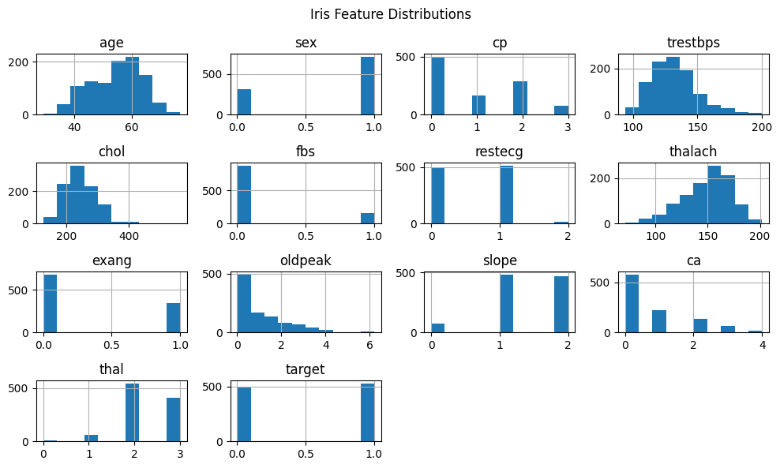
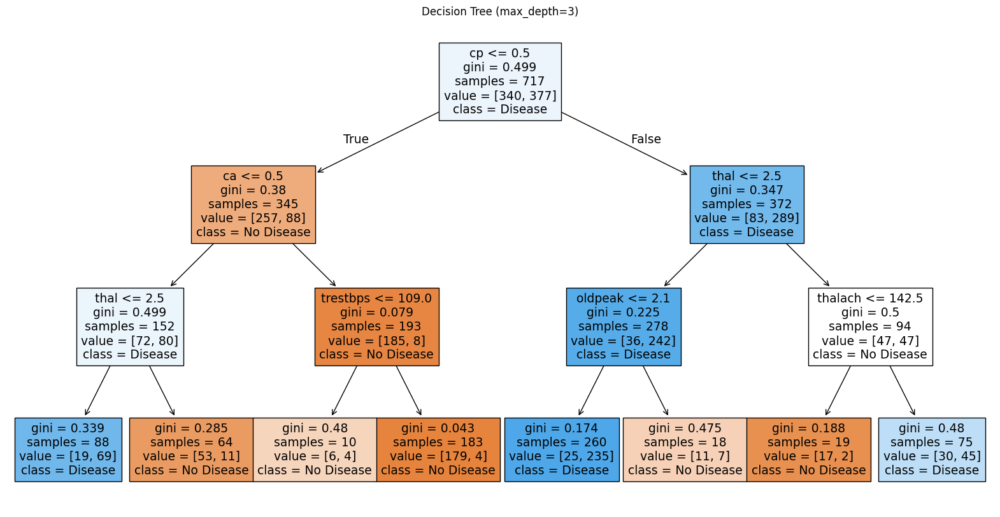
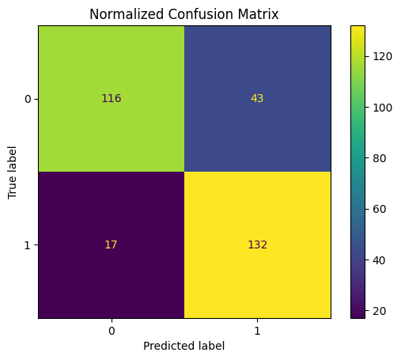
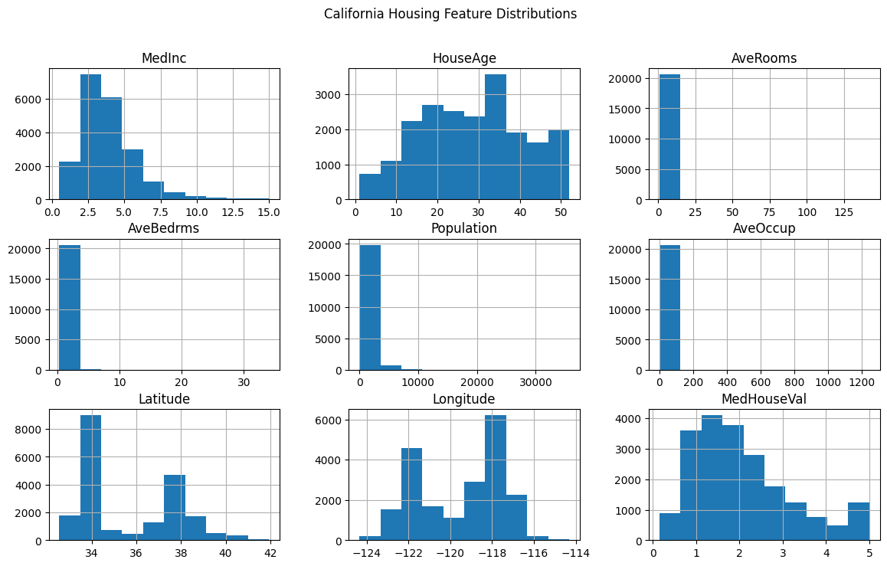
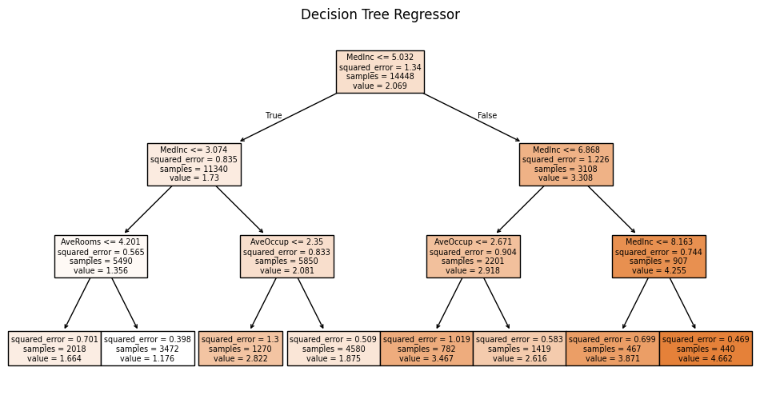

# import os
# # Set working directory manually on Gadi to be able to load csv files
# user = os.getenv('USER')
# os.chdir('/scratch/cd82/'+user+'/notebooks/')Checking Python packages
# !which python
# !where python# Package installation if not already installed
# !pip install numpy
# !pip install scikit-learn# import importlib
# import os
# packages = ['numpy', 'pandas', 'matplotlib', 'seaborn', 'sklearn', 'xgboost', 'shap']
# for pkg in packages:
# try:
# module = importlib.import_module(pkg)
# path = os.path.dirname(module.__file__)
# print(f"{pkg}: {path}")
# except ImportError:
# print(f"{pkg}: Not installed")Decision Tree Basics
Decision Trees are supervised learning models used for both classification and regression tasks. They work by recursively splitting the dataset based on feature values to reduce impurity.
How It Works
- For classification, trees use metrics like Gini impurity or Entropy to decide the best split.
- For regression, they typically minimize Mean Squared Error (MSE).
The tree starts at a root and splits the data into branches based on feature thresholds, creating a path to a decision leaf.
🔍 How Splitting Works in Decision Trees
🧪 Classification: Gini Impurity and Entropy
To decide the best feature and threshold to split on, decision trees evaluate impurity at each possible split. Lower impurity means a better split.
✅ Gini Impurity
Gini measures how often a randomly chosen element would be incorrectly labeled if it was randomly labeled according to the distribution in the node:
\[ \text{Gini} = 1 - \sum_{i=1}^{C} p_i^2 \]
Where: - $ C $ is the number of classes
- $ p_i $ is the proportion of class $ i $
✅ Entropy (Information Gain)
Entropy measures the disorder or uncertainty of the classes:
\[ \text{Entropy} = - \sum_{i=1}^{C} p_i \log_2(p_i) \]
A split is chosen to minimize the weighted impurity (Gini or Entropy) of the resulting child nodes.
📈 Regression: Mean Squared Error (MSE)
In regression trees, the quality of a split is measured using Mean Squared Error, which calculates how far predictions are from actual values.
✅ MSE Formula
\[ \text{MSE} = \frac{1}{n} \sum_{i=1}^{n} (y_i - \bar{y})^2 \]
Where: - $ y_i $ are the true values
- $ {y} $ is the mean value of the current region
- $ n $ is the number of samples
The best split minimizes the total MSE across the child nodes.
🎯 Final Prediction
- Classification Tree: predicts the majority class in a leaf.
- Regression Tree: predicts the mean target value of samples in a leaf.
Key Hyperparameters
max_depth: Maximum number of splits down any path.min_samples_split: Minimum samples needed to split a node.min_samples_leaf: Minimum samples in a leaf node.criterion: Splitting metric (gini,entropy,squared_error).
Importing packages
# Import libraries
import pandas as pd
import matplotlib.pyplot as plt
from sklearn.datasets import fetch_california_housing, fetch_openml
from sklearn.tree import DecisionTreeClassifier, DecisionTreeRegressor, plot_tree
from sklearn.model_selection import train_test_split
import seaborn as sns
%matplotlib inlineClassification on Heart Disease dataset
# Load dataset
df = pd.read_csv("heart.csv")
# Display dataframe
display(df.head())| age | sex | cp | trestbps | chol | fbs | restecg | thalach | exang | oldpeak | slope | ca | thal | target | |
|---|---|---|---|---|---|---|---|---|---|---|---|---|---|---|
| 0 | 52 | 1 | 0 | 125 | 212 | 0 | 1 | 168 | 0 | 1.0 | 2 | 2 | 3 | 0 |
| 1 | 53 | 1 | 0 | 140 | 203 | 1 | 0 | 155 | 1 | 3.1 | 0 | 0 | 3 | 0 |
| 2 | 70 | 1 | 0 | 145 | 174 | 0 | 1 | 125 | 1 | 2.6 | 0 | 0 | 3 | 0 |
| 3 | 61 | 1 | 0 | 148 | 203 | 0 | 1 | 161 | 0 | 0.0 | 2 | 1 | 3 | 0 |
| 4 | 62 | 0 | 0 | 138 | 294 | 1 | 1 | 106 | 0 | 1.9 | 1 | 3 | 2 | 0 |
target (or sometimes named num in original datasets):
Binary classification:
0 → No heart disease
1 → Heart disease present
| Column Name | Description |
|---|---|
age |
Age in years |
sex |
Sex (1 = male; 0 = female) |
cp |
Chest pain type (0–3, categorical: typical angina to asymptomatic) |
trestbps |
Resting blood pressure (in mm Hg) |
chol |
Serum cholesterol in mg/dl |
fbs |
Fasting blood sugar > 120 mg/dl (1 = true; 0 = false) |
restecg |
Resting electrocardiographic results (0, 1, 2) |
thalach |
Maximum heart rate achieved |
exang |
Exercise-induced angina (1 = yes; 0 = no) |
oldpeak |
ST depression induced by exercise relative to rest |
slope |
Slope of the peak exercise ST segment (0–2) |
ca |
Number of major vessels colored by fluoroscopy (0–3) |
thal |
Thalassemia (1 = normal; 2 = fixed defect; 3 = reversible defect) |
# show numerical columns
display(df.describe())| age | sex | cp | trestbps | chol | fbs | restecg | thalach | exang | oldpeak | slope | ca | thal | target | |
|---|---|---|---|---|---|---|---|---|---|---|---|---|---|---|
| count | 1025.000000 | 1025.000000 | 1025.000000 | 1025.000000 | 1025.00000 | 1025.000000 | 1025.000000 | 1025.000000 | 1025.000000 | 1025.000000 | 1025.000000 | 1025.000000 | 1025.000000 | 1025.000000 |
| mean | 54.434146 | 0.695610 | 0.942439 | 131.611707 | 246.00000 | 0.149268 | 0.529756 | 149.114146 | 0.336585 | 1.071512 | 1.385366 | 0.754146 | 2.323902 | 0.513171 |
| std | 9.072290 | 0.460373 | 1.029641 | 17.516718 | 51.59251 | 0.356527 | 0.527878 | 23.005724 | 0.472772 | 1.175053 | 0.617755 | 1.030798 | 0.620660 | 0.500070 |
| min | 29.000000 | 0.000000 | 0.000000 | 94.000000 | 126.00000 | 0.000000 | 0.000000 | 71.000000 | 0.000000 | 0.000000 | 0.000000 | 0.000000 | 0.000000 | 0.000000 |
| 25% | 48.000000 | 0.000000 | 0.000000 | 120.000000 | 211.00000 | 0.000000 | 0.000000 | 132.000000 | 0.000000 | 0.000000 | 1.000000 | 0.000000 | 2.000000 | 0.000000 |
| 50% | 56.000000 | 1.000000 | 1.000000 | 130.000000 | 240.00000 | 0.000000 | 1.000000 | 152.000000 | 0.000000 | 0.800000 | 1.000000 | 0.000000 | 2.000000 | 1.000000 |
| 75% | 61.000000 | 1.000000 | 2.000000 | 140.000000 | 275.00000 | 0.000000 | 1.000000 | 166.000000 | 1.000000 | 1.800000 | 2.000000 | 1.000000 | 3.000000 | 1.000000 |
| max | 77.000000 | 1.000000 | 3.000000 | 200.000000 | 564.00000 | 1.000000 | 2.000000 | 202.000000 | 1.000000 | 6.200000 | 2.000000 | 4.000000 | 3.000000 | 1.000000 |
df.hist(figsize=(10,6))
plt.suptitle('Iris Feature Distributions')
plt.tight_layout()
plt.show()
# Load dataset
df = pd.read_csv("heart.csv")
X = df.drop("target", axis=1)
y = df["target"]
X_train, X_test, y_train, y_test = train_test_split(X, y, test_size=0.3, random_state=42)
clf = DecisionTreeClassifier(max_depth=3, random_state=42)
clf.fit(X_train, y_train)
plt.figure(figsize=(20,10))
plot_tree(clf, feature_names=X.columns, class_names=["No Disease", "Disease"], filled=True)
plt.title("Decision Tree (max_depth=3)")
plt.show()
from sklearn.metrics import classification_report, ConfusionMatrixDisplay
from sklearn.metrics import accuracy_score
# Predict on test set
y_pred = clf.predict(X_test)
# Calculate accuracy
accuracy = accuracy_score(y_test, y_pred)
# Display
print(f"Accuracy: {accuracy:.2f}")
ConfusionMatrixDisplay.from_estimator(clf, X_test, y_test)
plt.title("Normalized Confusion Matrix")
plt.show()Accuracy: 0.81
Regression with California Housing
# Load regression dataset (California housing)
housing = fetch_california_housing(as_frame=True)
df = housing.frame# California Housing dataset
display(df.head())| MedInc | HouseAge | AveRooms | AveBedrms | Population | AveOccup | Latitude | Longitude | MedHouseVal | |
|---|---|---|---|---|---|---|---|---|---|
| 0 | 8.3252 | 41.0 | 6.984127 | 1.023810 | 322.0 | 2.555556 | 37.88 | -122.23 | 4.526 |
| 1 | 8.3014 | 21.0 | 6.238137 | 0.971880 | 2401.0 | 2.109842 | 37.86 | -122.22 | 3.585 |
| 2 | 7.2574 | 52.0 | 8.288136 | 1.073446 | 496.0 | 2.802260 | 37.85 | -122.24 | 3.521 |
| 3 | 5.6431 | 52.0 | 5.817352 | 1.073059 | 558.0 | 2.547945 | 37.85 | -122.25 | 3.413 |
| 4 | 3.8462 | 52.0 | 6.281853 | 1.081081 | 565.0 | 2.181467 | 37.85 | -122.25 | 3.422 |
MedHouseVal: Median house value (in hundreds of thousands of dollars). For example, a value of 2.5 means $250,000.
| Feature Name | Description |
|---|---|
MedInc |
Median income in block group (in tens of thousands of dollars) |
HouseAge |
Median age of houses in the block group |
AveRooms |
Average number of rooms per household |
AveBedrms |
Average number of bedrooms per household |
Population |
Block group population |
AveOccup |
Average number of household members |
Latitude |
Latitude of the block group (geographic location) |
Longitude |
Longitude of the block group (geographic location) |
df.hist(figsize=(14,8))
plt.suptitle('California Housing Feature Distributions')
plt.show()
# Train a Decision Tree Regressor
X = housing.data
y = housing.target
X_train, X_test, y_train, y_test = train_test_split(X, y, test_size=0.3, random_state=42)
reg = DecisionTreeRegressor(max_depth=3, random_state=42)
reg.fit(X_train, y_train)DecisionTreeRegressor(max_depth=3, random_state=42)In a Jupyter environment, please rerun this cell to show the HTML representation or trust the notebook.
On GitHub, the HTML representation is unable to render, please try loading this page with nbviewer.org.
Parameters
| criterion | 'squared_error' | |
| splitter | 'best' | |
| max_depth | 3 | |
| min_samples_split | 2 | |
| min_samples_leaf | 1 | |
| min_weight_fraction_leaf | 0.0 | |
| max_features | None | |
| random_state | 42 | |
| max_leaf_nodes | None | |
| min_impurity_decrease | 0.0 | |
| ccp_alpha | 0.0 | |
| monotonic_cst | None |
plt.figure(figsize=(12, 6))
plot_tree(reg, feature_names=housing.feature_names, filled=True)
plt.title('Decision Tree Regressor')
plt.show()
What is R² (Coefficient of Determination)?
The R² score measures how well the predictions of a regression model approximate the actual data. It is defined as:
\[ R^2 = 1 - \frac{\sum_{i=1}^{n}(y_i - \hat{y}_i)^2}{\sum_{i=1}^{n}(y_i - \bar{y})^2} \]
Where: - $ y_i $ are the actual values, - $ _i $ are the predicted values, - $ {y} $ is the mean of the actual values.
Interpretation: - $ R^2 = 1 $: perfect prediction - $ R^2 = 0 $: model predicts no better than the mean - $ R^2 < 0 $: model performs worse than predicting the mean
from sklearn.metrics import r2_score
# Predict on test set
y_pred = reg.predict(X_test)
# Calculate R²
r2 = r2_score(y_test, y_pred)
# Display
print(f"R² Score: {r2:.2f}")R² Score: 0.52